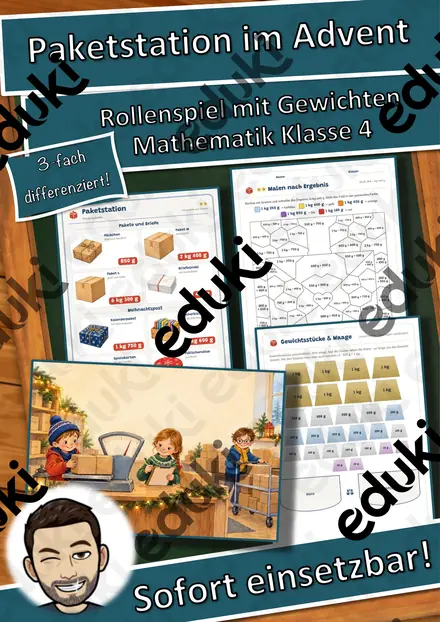
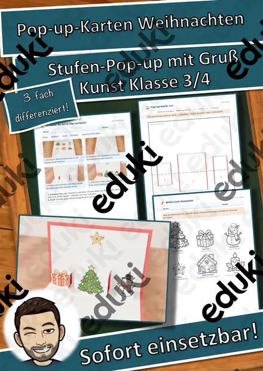
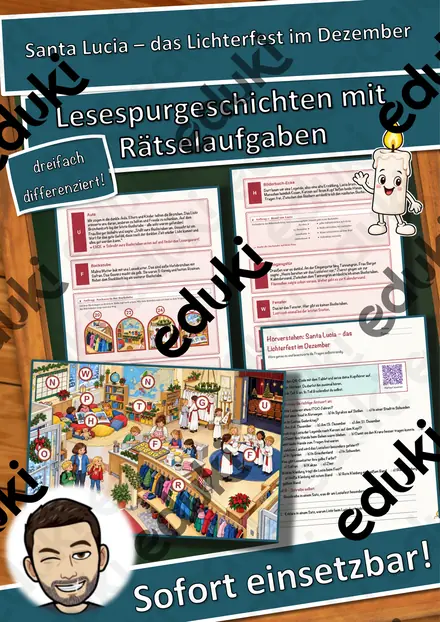
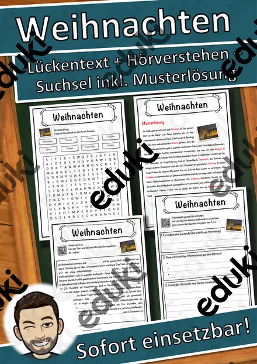
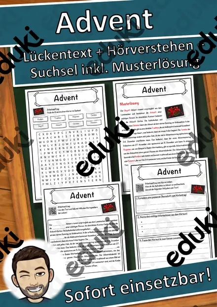

Weihnachten und Advent: Arbeitsblätter für Klasse 1–6 (Religion)
Die Adventszeit bringt Rituale, Geschichten und Traditionen in den Unterricht. Der Bezug reicht von der Weihnachtsgeschichte bis zu Bräuchen anderer Länder.
Typische Bausteine der Einheit sind Advent, Nikolaus und Krippe; darauf aufbauend kommen Plätzchen backen, Weihnachtsbräuche und Lichterfeste zur Sprache.
In den Lehrplänen der Länder ist das Thema im Fach Religion verankert, meist in den Klassen 1 bis 6. Die Kinder erzählen die Weihnachtsgeschichte und vergleichen Bräuche in verschiedenen Ländern.
Ob Vertretungsstunde, Stationenarbeit oder Hausaufgabe: Die Arbeitsblätter zu Weihnachten und Advent lassen sich flexibel einsetzen, etwa mit Advent als Auftakt und Lichterfeste als Abschluss. Musterlösungen sparen die Korrekturzeit. Zur Differenzierung eignen sich die Lesespurgeschichten mit ihren drei Niveaustufen.
Die Auswahl zum Thema umfasst derzeit 34 Titel, zum Beispiel Advents-Rätselreise Materialpaket Klasse 1–4: 3, Materialpaket Advent für die 5. Klasse: 3 und Materialpaket Winter und Advent für die 7.. Dazu zählen 10 Lesespurgeschichten, 3 Rechenwelten, 1 Lesespaziergang, 3 Bastelvorlagen und 4 Lückentexte mit Hörverstehen für Klasse 1–7. Ein Adventskalender mit täglichen Aufgaben strukturiert die Wochen vor den Ferien und entlastet die Planung.
Das gehört zum Thema
Passende Arbeitsblätter und Materialpakete

Materialpaket Advent für die 5. Klasse: 3 Lesespurgeschichten mit Rätselaufgaben (Weihnachtsstern, Plätzchen backen, Handnähen)

Materialpaket Winter und Advent für die 7. Klasse: 10 Lesespurgeschichten mit Rätselaufgaben fächerübergreifend (Weihnachtsoratorium, Südpol, Eishockey & mehr)

Materialpaket Advent und Winter für die 6. Klasse: 7 Lesespurgeschichten mit Rätselaufgaben (Weihnachtsbasar, Saturnalien, Lichterfeste & mehr)

Materialpaket Winter und Advent für die 4. Klasse: 5 Lesespurgeschichten mit Rätselaufgaben (Weihnachtsmarkt, Fröbelsterne, Sternbilder & mehr)

Materialpaket Advent und Weihnachten für die 3. Klasse: 8 Lesespurgeschichten mit Rätselaufgaben (Barbarazweige, Lebkuchen, Santa Lucia, Sternsinger & mehr)

Paketstation im Advent – Rollenspiel Gewichte kg, g und t, Malnehmen mit Größen, 3-fach differenziert (Klasse 4)

Advents-Rätselreise Materialpaket Klasse 1–4: 3 Adventskalender mit Geschichten + Rätseln in 3 Stufen, QR-Audio

3D-Anhänger Advent – Oktaeder, Diamant und Kugel zum Ausmalen und Basteln, 3-fach differenziert (Klasse 3/4)

Der Spielzeugladen vor Weihnachten – Rollenspiel Münzen und Scheine bis 20 €, 3-fach differenziert (Klasse 1)

Pop-up-Karten Weihnachten – Bastelvorlage mit Stufen-Pop-up, Motiven und Weihnachtsgruß, 3-fach differenziert (Klasse 3/4)

Advents-Häuserstadt – Klassen-Adventskalender zum Basteln mit 24 Adventsaufgaben, 3-fach differenziert (Klasse 1–4)

Lesespaziergang: Plätzchen backen im Advent – 3-fach differenziert (★/★★/★★★), Klasse 2–4

Die Lebkuchen-Backstube – Rollenspiel Einmaleins und Teilen, 3-fach differenziert (Klasse 2)

Weihnachten in anderen Ländern – Bräuche rund um die Welt – Lesespurgeschichte mit Rätselaufgaben (Klasse 2)

Advent – warten auf Weihnachten – Lesespurgeschichte mit Rätselaufgaben (Klasse 2)

Santa Lucia – das Lichterfest im Dezember – Lesespurgeschichte mit Rätselaufgaben (Klasse 3)

Nikolaus von Myra – Legende und Brauch – Lesespurgeschichte mit Rätselaufgaben (Klasse 2)

Lichterfeste in den Religionen – Diwali, Chanukka, Martinstag, Advent – Lesespurgeschichte mit Rätselaufgaben (Klasse 6)

Wichtel beschreiben: Schreibanlass mit 4 Wichtelbildern, Wortspeicher und Checkliste (Klasse 3–4)

Weihnachten Lückentext mit Wortspeicher Hörverstehen und Suchsel

Lebkuchen Lückentext mit Wortspeicher Hörverstehen und Suchsel

Advent Lückentext mit Wortspeicher Hörverstehen und Suchsel

Weihnachten: Das große Gemeinschaftsbild – 30 Felder, ein Kunstwerk für die ganze Klasse

Nikolaus: Das große Gemeinschaftsbild – 30 Felder, ein Kunstwerk für die ganze Klasse
Weitere 10 Materialien zum Thema im Material-Finder.
Häufige Fragen
Für welche Klassenstufe passen die Arbeitsblätter zu Weihnachten und Advent?
Der Schwerpunkt liegt auf Klasse 3; insgesamt deckt die Auswahl (34 Titel) Klasse 1–7 ab. In der Beschreibung jedes Materials steht die empfohlene Stufe.
Welche Inhalte decken die Materialien zu Weihnachten und Advent ab?
Behandelt werden unter anderem Advent, Nikolaus, Krippe und Plätzchen backen. Welche Aspekte in Ihrer Klasse Vorrang haben, richtet sich nach dem Lehrplan Ihres Bundeslandes.
Wie setze ich Weihnachten und Advent im Unterricht ein?
Ein Adventskalender mit täglichen Aufgaben strukturiert die Wochen vor den Ferien und entlastet die Planung. So entsteht aus den Blättern eine kleine Einheit, die sich auf zwei bis drei Stunden verteilen lässt.
Mehr Material nach Fach und Klasse
- Alle Materialien Mathematik
- Arbeitsblätter Mathematik Klasse 1
- Arbeitsblätter Mathematik Klasse 2
- Arbeitsblätter Mathematik Klasse 3
- Arbeitsblätter Mathematik Klasse 4
- Arbeitsblätter Mathematik Klasse 5
- Arbeitsblätter Mathematik Klasse 6
- Unterrichtsmaterial Klasse 1
- Unterrichtsmaterial Klasse 2
- Unterrichtsmaterial Klasse 3
- Unterrichtsmaterial Klasse 4
- Unterrichtsmaterial Klasse 5
- Unterrichtsmaterial Klasse 6
Verwandte Lehrplanthemen
- Bibel und christliche Feste (Religion, Klasse 1–6)
- Ostern und Frühling (Religion, Klasse 1–4)
- Weltreligionen (Religion, Klasse 4–9)
- Jahreszeiten (Sachunterricht, Klasse 1–4)
- Lesen und Leseverstehen (Deutsch, Klasse 1–6)